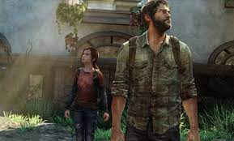
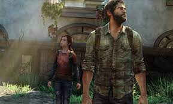
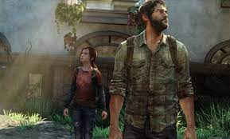

The Last of Us é uma franquia de jogos eletrônicos aclamada pela crítica, desenvolvida pela Naughty Dog e publicada pela Sony Computer Entertainment. A série é conhecida por sua narrativa envolvente, personagens complexos e jogabilidade imersiva, que a consagraram como um marco na indústria dos games.
A franquia The Last of Us é um sucesso de crítica e público, tendo conquistado diversos prêmios, incluindo vários GOTY (Game of the Year). Aclamada por sua história emocionante, personagens cativantes e jogabilidade envolvente, a série é considerada um marco na indústria dos jogos eletrônicos e um exemplo de como os games podem contar histórias complexas e emocionantes.
